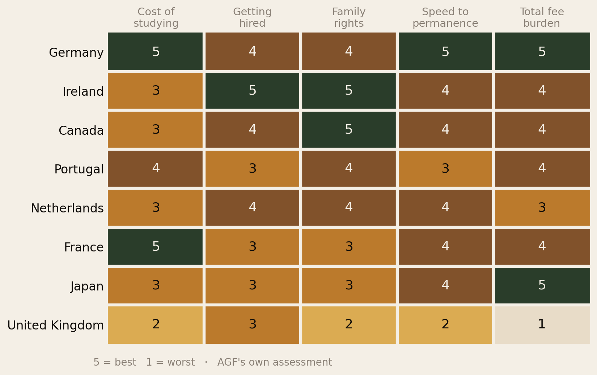
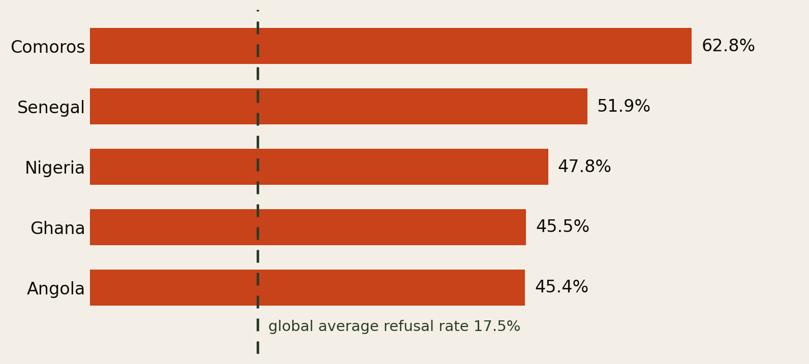
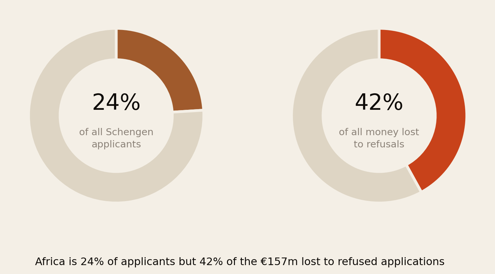
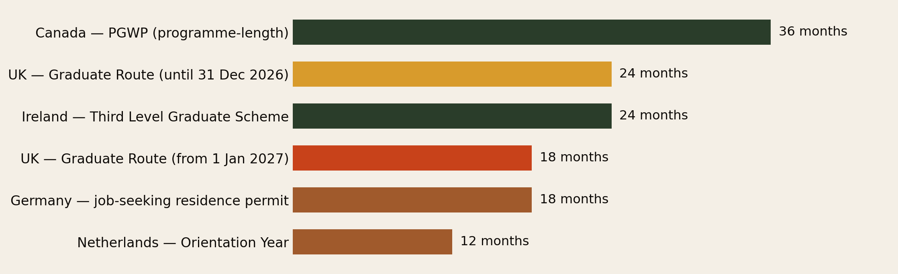
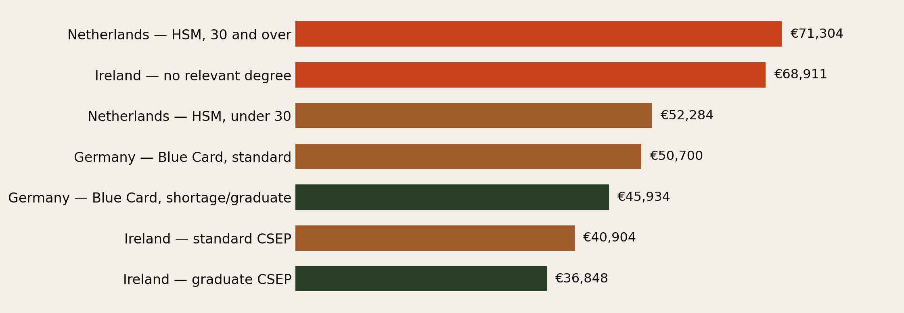
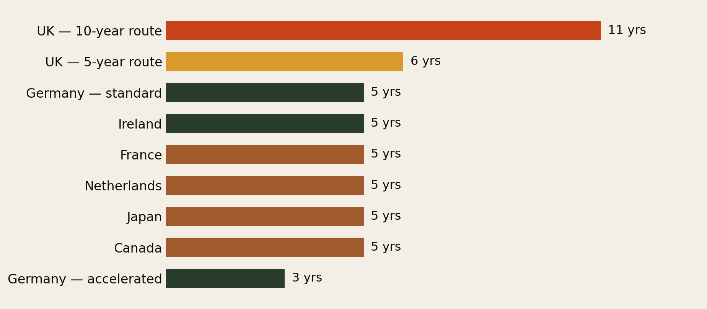
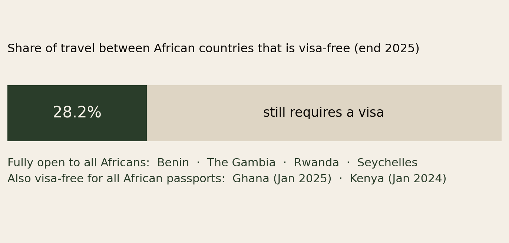

Where the Door Is Actually Open.
Our last report priced what it costs to stay legal. This one answers the question that comes first: where should you go? A policy-by-policy read of the countries that actually make room for Africans — to study, to work, to bring family, and to stop renewing.
Section 01Executive Summary
Most advice about moving abroad is organised around desire — which country you would like to live in. This report is organised around policy: which countries have written rules that a person leaving Lagos, Nairobi, Accra, Luanda or Casablanca can actually satisfy.
Those are different questions, and the answers are not the ones the market pushes hardest. The countries with the biggest agent networks and the loudest recruitment budgets are frequently not the countries with the best policy. Here is what the rules say:
- Germany is the strongest all-round option, and it is not close. Public universities charge €0 tuition to African students in fifteen of sixteen states, the Opportunity Card lets a qualified person come to look for work without a job offer, and citizenship arrives in five years — or three with strong integration.
- Ireland has the best terms for a graduate who wants to bring family. The Critical Skills Employment Permit carries no labour market test, family reunification from day one, and a route to Stamp 4 in two years — at a graduate salary floor of €36,848.
- Portugal has a route most eligible Africans have never used. The CPLP agreement gives nationals of Angola, Mozambique, Cabo Verde, Guinea-Bissau, São Tomé and Príncipe and Equatorial Guinea a residence permit that requires no proof of employment or minimum income.
- Canada is narrowing but has not closed. Study permits are capped at 408,000 for 2026 and the student admissions target fell 49% — but master’s and doctoral students at public institutions are now exempt from the cap entirely.
- The UK is the one to enter before you enter it later. The Graduate Route drops from 24 months to 18 for most graduates from 1 January 2027; applications submitted before 31 December 2026 lock in the two-year version.
- And Africa itself is 28.2% open — the share of intra-African travel that needs no visa. Benin, The Gambia, Rwanda and Seychelles are fully open to all Africans; Ghana joined in January 2025 and Kenya in January 2024.
The countries that advertise hardest are rarely the countries whose rules are kindest. Read the statute, not the brochure.
Section 02What “Open” Actually Means
“Good immigration policy” is not one thing. A country can be generous to students and brutal to their spouses. It can hand out work permits freely and never hand out passports. So this report scores five separate things, because a family moving abroad has to clear all five, not one:
- Cost of studying. Tuition for a non-EU African student, plus whether you may work while enrolled.
- Getting hired. The salary floor an employer must meet, whether a labour market test applies, and whether you may arrive before you have a job.
- Family rights. Whether dependants may come, when, and whether your spouse may work.
- Speed to permanence. Years of lawful residence before permanent status and citizenship.
- Total fee burden. What the whole path costs in government fees — covered in depth in our companion report, The Visa Treadmill.

Two things the scorecard makes visible immediately. No country wins on everything. France is one of the cheapest places on earth to get a degree and one of the harder places to get hired as a non-EU graduate. Ireland is superb once you have a job offer and expensive before you do. And the UK — still the default destination in most African family conversations — scores worst overall, driven by fee burden and the length of its settlement clock.
Section 03The Africa Tax
Before any comparison of destination policy, there is a fact that applies to African applicants specifically and to almost nobody else at the same intensity: you are far more likely to be refused, and you pay for the refusal.

The Schengen visa fee is €90 and it is non-refundable on refusal. Put those two facts together and you get one of the most quietly extractive transfers in the global economy:

In 2024 alone, African applicants lost roughly €60 million (about $67.5m) to refused Schengen applications. As LAGO Collective’s Marta Foresti put it, the poorer the country of origin, the higher the refusal rate — which means the poorest applicants subsidise the system that rejects them.
This is the single strongest argument for choosing your destination by route, not by preference. A long-stay study or work visa is assessed on documents you can control. A short-stay visitor visa is assessed on a suspicion you cannot.
The practical implication runs through the whole report: where a country offers a national long-stay route — a student visa, a job-seeker visa, a skilled-worker permit — your odds are governed by whether you meet published criteria. Those are the routes this report is about. The refusal statistics above are for short-stay Schengen visitor visas, a different and far more discretionary process.
Section 04If You Are a Student
Three things decide whether studying abroad is a viable plan rather than an expensive detour: what the degree costs, whether you can work while you study, and how long you are allowed to stay afterwards to convert the degree into a job. That last one is the whole ballgame, and it is the one most families never ask about.
Tuition: Germany and France are in a category of their own
Public universities across fifteen of Germany’s sixteen states charge no tuition at all, to Germans and Africans alike. You pay only a semester contribution of roughly €100–€300 — around €700 a year including administrative costs. The single exception is Baden-Württemberg (Stuttgart, Heidelberg, Freiburg, Karlsruhe, Mannheim), which charges non-EU students €1,500 per semester on top of the semester fee (source). PhD students are typically exempt even there.
Read that again, because it inverts the usual assumption: a Nigerian or Kenyan student can take a German master’s degree for roughly the cost of the paperwork, while the equivalent UK or Canadian degree runs into five figures a year. Germany also hosts thousands of English-taught programmes, so the language barrier is at the job stage, not the admission stage.
The post-study window is the number that matters
A degree you cannot convert into a work permit is a very expensive souvenir. What decides conversion is how many months you have to find an employer after graduating — while still lawfully resident, still able to interview locally, still on the ground.

Two things to take from this chart.
The UK is on a deadline. The Graduate Route currently gives bachelor’s and master’s graduates 24 months. From 1 January 2027 that drops to 18 months (PhDs keep three years). Applications submitted before 31 December 2026 lock in the two-year version. If the UK is your plan and your timing is flexible, that date is worth six months of your life.
Germany’s 18 months is more generous than it looks, because it stacks with everything else Germany offers: you may work while searching, tuition was free, and the residence clock toward settlement has been running the whole time.
Working while you study
Germany allows students to work a defined number of days per year alongside study; the Netherlands, Ireland and Canada all permit part-time work during term. The rules change often enough that you should check the current limit at application — but the structural point holds: in the tuition-free countries, part-time work covers a meaningful share of living costs rather than a rounding error against fees.
Section 05If You Are a Worker
For someone applying from Africa with a degree and experience but no European or North American work history, three questions decide everything: Can I come without a job offer? What salary must an employer promise? And does the employer have to prove no local could do the job?
The rarest and most valuable feature: arriving without a job
Almost every skilled-migration system requires an offer before you may enter. Germany’s Opportunity Card (Chancenkarte) is the significant exception, and it is badly under-used by African applicants.
You qualify either by holding a recognised degree or vocational qualification, or by scoring at least six points on a grid covering qualifications, experience, language, age and prior ties to Germany. You need German at A1 or English at B2, and proof of about €1,091 a month to support yourself. Once there you may work up to 20 hours a week in any sector and take two-week trial placements with unlimited employers (Jobbatical; MyGermanUniversity).
English at B2 and a recognised degree is enough to legally enter Germany to look for work. Most people who qualify for this have never heard of it.
The salary an employer must be willing to promise
Where an offer is required, the binding constraint is rarely the visa — it is the salary floor. This is the number that quietly disqualifies most applicants, and it varies enormously.

Ireland’s graduate rate is the most reachable number on this chart. A recent graduate of a recognised third-level institution — anywhere, at Level 8 or above, in an occupation on the Critical Skills list — needs an offer of just €36,848. Without a relevant degree the same permit demands €68,911, nearly double. The degree is doing almost all the work.
Germany’s Blue Card splits the same way. Standard threshold €50,700 from 1 January 2026; but shortage occupations, recent graduates, and qualifying IT specialists without a degree come in at €45,934. That IT carve-out matters: it is one of very few routes in Europe that admits self-taught or bootcamp-trained technologists on experience alone.
The Netherlands is the outlier, and the age cliff is severe. Under 30 you need about €52,284; at 30 you need about €71,304 — a 36% jump on your birthday. For a mid-career African professional, the Dutch route is often the least reachable on this list despite the country’s reputation.
The labour market test — the invisible obstacle
Some permits require the employer to advertise the role locally first and prove nobody suitable applied. That single requirement kills more African applications than any salary rule, because it makes hiring you administratively expensive for the employer.
Ireland’s Critical Skills Employment Permit carries no labour market needs test. Neither does the Dutch Highly Skilled Migrant route, provided the salary threshold is met. Germany’s Blue Card generally does not either. When you are choosing which permit to target, this is worth as much as the salary number — it decides whether an employer will even engage.
Section 06Family, and the Clock
Two questions get asked late and should be asked first. Can my family come with me? And when does the renewing stop?
On family, Ireland’s Critical Skills permit is the standout: family reunification from day one, with a route to Stamp 4 — which removes employment-permit conditions entirely — after two years. Canada’s permanent residence routes bring the whole family in one application, and spouses of many permit-holders receive open work permits. Several other systems make dependants wait, or admit them on permits that do not allow work, which converts a two-income household into a one-income household at exactly the moment costs spike.

The spread here is the single largest difference between destinations in this entire report. Germany’s accelerated three years versus the UK’s 10-year route is an eight-year gap in your life — eight more years of renewals, of fees, of being deportable, of not being able to plan.
Germany’s 2024 citizenship reform cut the standard requirement from eight years to five, and to three years with strong integration (C1 German plus demonstrated integration). It also permitted dual citizenship, which removes the wrenching choice many African families faced between a German passport and their own.
Section 07Your Passport May Have a Shortcut
Most migration advice treats all Africans as one applicant pool. The rules do not. Two shortcuts exist that depend entirely on which African passport you hold — and both are heavily under-used.
The Lusophone route: CPLP
If you are a national of Angola, Mozambique, Cabo Verde, Guinea-Bissau, São Tomé and Príncipe, or Equatorial Guinea, the Community of Portuguese Language Countries agreement gives you access to a Portuguese residence permit on terms nobody else gets.
The permit is issued for two years, renewable for three-year periods, and — the remarkable part — does not require proof of employment or minimum income. Law 9/2025 upgraded it to the EU uniform residence card format, which carries the right to travel and work across the Schengen Area (source).
One critical 2026 change. Under the new visa regime approved in 2025, you can no longer apply for the CPLP permit from inside Portugal on a tourist visa or visa waiver. You must now obtain a consular residence visa before travelling. Anyone working from pre-2025 advice — including a great deal of what is still circulating in WhatsApp groups — will get this wrong and lose the fee.
The Francophone route
For nationals of Senegal, Côte d’Ivoire, Cameroon, Mali, Burkina Faso, Benin, Togo, Niger, Guinea, Congo, DRC, Madagascar, Morocco, Tunisia and Algeria, France offers something structurally similar in effect if not in law: near-free public university tuition, degrees taught in a language you already hold, and dense professional and family networks already in place. France’s Passeport Talent covers skilled workers, researchers and founders on multi-year permits.
The trade-off is honest and worth stating: as The Visa Treadmill documented, France sharply raised its residence and naturalisation duties in 2026 — the naturalisation stamp alone went from €55 to €255. The fees are still low in absolute terms. The direction of travel is not favourable.
Section 08The Country Profiles
Germany — the strongest all-round option
| Dimension | What the rules say |
|---|---|
| Studying | €0 tuition at public universities in 15 of 16 states; ~€700/yr in semester fees. Baden-Württemberg charges non-EU students €1,500/semester. |
| After graduating | 18-month residence permit to seek work, with the right to work while searching. |
| Arriving without a job | Yes — Opportunity Card. 6 points on the grid, German A1 or English B2, ~€1,091/month funds. 20 hrs/week work permitted. |
| With a job | EU Blue Card at €50,700, or €45,934 for shortage occupations, recent graduates and qualifying IT specialists without a degree. |
| Citizenship | 5 years, or 3 with strong integration. Dual citizenship permitted since 2024. |
The catch: German. You can be admitted and educated in English, but the graduate labour market outside tech and academia expects working German. Budget two years of language study as part of the plan, not as an afterthought.
Ireland — the best terms once you have an offer
| Dimension | What the rules say |
|---|---|
| Studying | Fees are high — the weakest part of the Irish case. |
| After graduating | Third Level Graduate Scheme: 24 months. |
| With a job | Critical Skills Employment Permit. €36,848 for graduates of the last 12 months in a listed occupation; €40,904 standard with a relevant degree; €68,911 without one. |
| Labour market test | None for Critical Skills roles. |
| Family | Reunification from day one. |
| Permanence | Stamp 4 after 2 years; citizenship at 5 years reckonable residence. |
Salary thresholds rose on 1 March 2026 and a published roadmap phases in further increases through 2030 — so the €36,848 graduate floor is the lowest it will be. English-speaking, no language barrier, and a genuine two-year runway. For an African graduate in healthcare, tech or engineering, this is arguably the single most reachable high-quality destination on the list.
Canada — narrowing, but the graduate door widened
Canada spent 2024–25 tightening: study permits capped, PGWP field-of-study restrictions introduced, the 2026 student admissions target cut 49% to 155,000. General Express Entry draws have not run since April 2024 — every invitation now comes through provincial nominations, category-based draws, or the Canadian Experience Class.
But read the detail, because it cuts the other way for one specific group: from 1 January 2026, master’s and doctoral students at public institutions are exempt from the study permit cap and need no provincial attestation letter. And category-based draws — healthcare, STEM, trades, French language, and new 2026 categories for senior managers and researchers — often clear at lower CRS scores than general draws did.
What this means concretely: Canada has become materially harder for undergraduate and college-diploma applicants and slightly easier for graduate-degree applicants in targeted occupations. If you speak French, the francophone category draws are the most under-exploited advantage in Canadian immigration.
Portugal — unmatched if you hold the right passport
Covered in Section 07. For CPLP nationals it is the least demanding residence route in Europe. For other Africans, Portugal is a middling option with a moderate cost base and a nationality law currently under reform — verify the current residence requirement before planning around it.
Netherlands — excellent, if you are under 30
The Highly Skilled Migrant route has no labour market test and fast processing through recognised sponsors. The 12-month Orientation Year lets graduates of Dutch universities stay and work freely. But the salary thresholds are the highest here, and the jump at 30 is brutal: €4,357/month becomes €5,942/month overnight.
United Kingdom — the honest assessment
The UK remains the default in most African family conversations, and on policy it is now among the weaker options. Fees are the highest of any country we have costed — £77,414 for a family of four on the 10-year route. The Graduate Route shortens in January 2027. The Immigration Health Surcharge adds £1,035 per adult per year, payable upfront.
What the UK still has that nowhere else on this list matches: language, an enormous established African diaspora, degree recognition across Anglophone Africa, and the densest professional networks. Those are real advantages and they are why people keep choosing it. Just choose it with the price list in front of you.
Section 09Africa’s Own Open Doors
Every report like this assumes “abroad” means Europe or North America. For a growing number of African professionals it means Kigali, Accra, Nairobi, Port Louis or Casablanca — and the mobility picture within Africa is improving faster than the picture outside it.

28.2% of intra-African travel is visa-free. That is low, and it is also the highest it has ever been. Benin, The Gambia, Rwanda and Seychelles hold full openness scores. Ghana opened to all African passport holders on 1 January 2025; Kenya did so from January 2024. Namibia, Zambia, Zimbabwe and Malawi were among the most improved.
The honest counterweight, and it is a serious one: The Visa Treadmill found that Nigeria and Kenya are the two most expensive countries in Africa in which to hold long-term legal status — roughly $122,000 and $53,700 respectively for a family of four to reach citizenship, driven by per-person annual work-permit levies with no family discount. Visa-free entry and affordable residence are completely different things, and African policy is currently much better at the first than the second.
A continent can open its borders to visitors and still price out the people who want to stay and build. That gap is the next reform.
Section 10What’s Closing
A report that only lists open doors would be dishonest. The direction of travel in 2025–26 has been toward restriction almost everywhere, and anyone planning a move over a five-year horizon should assume today’s terms are the best terms.
- The UK Graduate Route falls from 24 to 18 months on 1 January 2027.
- Canada’s study permits are capped at 408,000 for 2026, down 7%; the student admissions target fell 49%.
- Ireland’s salary thresholds rise on a published schedule through 2030.
- Germany’s Blue Card thresholds rose on 1 January 2026 and are indexed to rise again.
- The Netherlands raised its thresholds about 4.5% for 2026.
- France raised residence and naturalisation duties sharply from 1 May 2026.
- Portugal closed the in-country CPLP application route and is reforming its nationality law.
Only one significant change ran the other way: Germany’s 2024 citizenship reform, cutting the residence requirement from eight years to five (three with strong integration) and permitting dual citizenship. That is a large exception, and it is a large part of why Germany tops this report.
Section 11The Decision Playbook
Not advice on immigration law — get that from a regulated adviser in the destination country. This is how to think about the choice.
- Check your passport for a shortcut before anything else. If you hold an Angolan, Mozambican, Cabo Verdean, Bissau-Guinean, São Toméan or Equatorial Guinean passport, the CPLP route to Portugal asks less of you than any other route in Europe asks of anyone. If you are francophone, France and Canada’s French-language category draws are structurally easier for you than for an equivalent anglophone applicant. Most people never check.
- If money is the binding constraint, the answer is Germany. Free tuition changes the arithmetic of the entire decision — it converts a debt-funded move into a savings-funded one, and it is the difference between going and not going for a large number of families.
- If a job offer is the binding constraint, target Ireland’s graduate CSEP. €36,848, no labour market test, family from day one. Know the exact threshold and the Critical Skills Occupations List before you apply for anything, and tell prospective employers the number — most do not know how low it is.
- If you have a degree but no offer, use the Opportunity Card. It is the only major route that lets you legally arrive and search. English B2 is enough to enter.
- Count the whole clock, not the first visa. A cheap entry route attached to a 10-year settlement path costs more in money, risk and life than an expensive route attached to a 5-year one. Read Fig 6 alongside The Visa Treadmill before committing.
- Ask about your spouse’s work rights before you accept the offer. A dependant visa without work rights halves household income at the exact moment your costs double.
- Prefer long-stay national routes over short-stay visas. Long-stay applications are decided against published criteria you can satisfy with documents. Short-stay visitor visas are decided against discretion — which is where the 45–60% African refusal rates live.
- Move before the rule changes, where you can. A UK Graduate Route application filed by 31 December 2026 is worth six extra months. Ireland’s graduate salary floor is the lowest it will ever be.
- Consider Africa seriously. Kigali, Accra and Nairobi are real options with genuine professional depth — but price the residence permits, not just the flight. Entry is cheap; staying is not.
Section 12Method & Limits
What this report is: a comparison of published immigration rules as at 11 August 2026, focused on the criteria that bind African applicants specifically — cost, salary floors, family rights, and time to permanence.
What it is not: a ranking of countries as places to live. Nothing here scores wages, cost of living, racism, climate, healthcare quality or how it feels to be African in any of these societies. Those matter enormously and this report is silent on them.
Things that could move the numbers:
- The scorecard in Fig 1 is AGF’s own judgement, not a measured index. The underlying rules are sourced; the 1–5 weighting is editorial. Reasonable people would score it differently.
- Salary thresholds, caps and permit lengths change frequently — several in this report changed within the last eight months. Verify every number against the official source before you act on it. Links are inline throughout.
- Occupation lists (Ireland’s Critical Skills list, Canada’s category draws, Germany’s shortage occupations) determine eligibility as much as salary does, and they are revised regularly.
- Refusal-rate data covers short-stay Schengen visitor visas and does not describe study or work visa outcomes, which are assessed differently.
- Portugal’s nationality law is under reform; we have deliberately not quoted a residence requirement for citizenship there.
- Currency thresholds are quoted in the currency the rule is written in. No conversions are applied.
Principal sources: German Opportunity Card and EU Blue Card guidance via Jobbatical and MyGermanUniversity; Baden-Württemberg tuition via MyGermanUniversity; Ireland’s Department of Enterprise, Trade and Employment and Fragomen on the March 2026 thresholds; KPMG and Jobbatical on Dutch 2026 thresholds; CIC News and IRCC on Canadian study permits, PGWP and Express Entry; Lamares Capela and Apoio Jurídico Imigração on CPLP; CNN and EUobserver on LAGO Collective refusal-fee analysis; the AfDB Africa Visa Openness Index; and UK Home Office guidance on the Graduate Route.
↓ Download the full 11-page PDF edition
Companion report: The Visa Treadmill — What It Costs to Stay Legal, which prices the full path to citizenship in 26 countries.
The diaspora helps the diaspora.
Africa Global Forum is a peer network for Africans abroad — help each other, sit together, and bounce ideas. The research above is part of an open library. The Forum itself is by application.